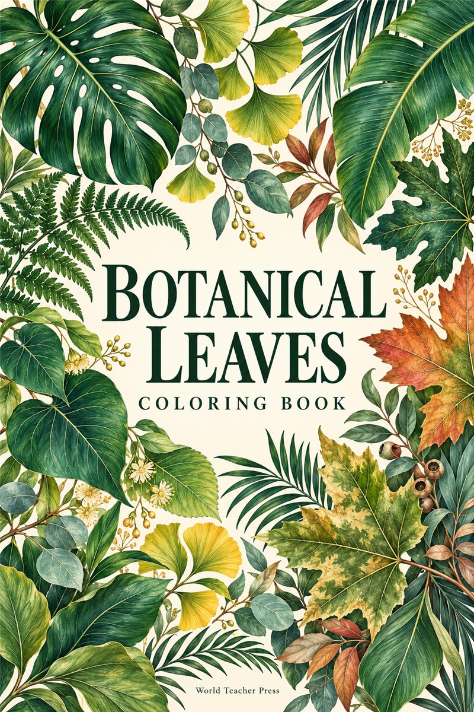

LOOK CLOSER. COLOUR. DISCOVER.
Every leaf
has a story.
A little curiosity can grow into something wonderful. Meet the plants behind your colouring book, one leaf at a time.
Explore the collection52
botanical pages
so many ways to see nature

A WORLD OF LEAVES, WAITING TO BE DISCOVEREDYOUR FIELD GUIDE
Find your leaf.
From familiar woodland trees to tropical wonders.
Choose a leaf and let your curiosity lead.
No leaves found.
Try a different name or choose another group.
MORE THAN A COLOURING BOOK
Colour a leaf.
Grow your curiosity.
This companion to Botanical Leaves invites you to slow down, notice the details and explore the natural world. Scan a code in your book to meet a plant, or wander through the collection here.
01
Look
Notice the outline, edges and veins.
02
Colour
Try natural shades or imagine your own.
03
Discover
Compare leaves. Ask questions. Keep exploring.